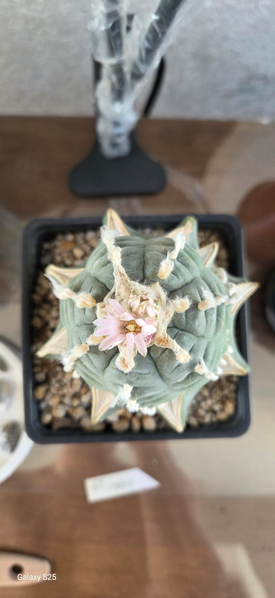
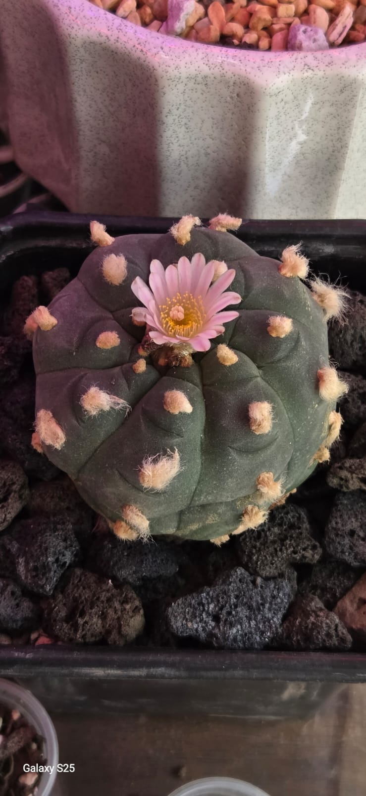

Introducción a la vida de las Lophophora
Las Lophophoras son un género de cactáceas globosas endémicas de México y el sur de Texas. Se caracterizan por carecer de espinas en su etapa adulta y presentar suaves penachos de lana en sus areolas.
Tienen un crecimiento extremadamente lento y poseen un alto valor botánico, cultural y ecológico. En esta monografía exploraremos sus especies principales y las condiciones ideales para su conservación y cuidado.
Mi Colección
Ejemplares destacados
L.Williamsi Super White Nothem
Forma norteña reconocida por la abundante y tupida lana blanca pura que desarrolla en las areolas y en el ápice central.
- Crecimiento: Solitario / Poco ahijamiento
- Flor: Rosa pálido o blanca
- Sustrato: 80% Mineral / 20% Orgánico

L.Williamsi x Fricci Yatagai
Híbrido de alta colección que combina la simetría de williamsii con los patrones de costillas geométricas y marcadas de fricii.
- Estructura: Costillas sinuosas / Marcadas
- Flor: Rosa magenta intenso
- Sustrato: 80% Mineral / 20% Orgánico

L.Williamsi Texana
Variedad nativa del sur de Texas de cuerpo globoso achatado, tono verde glauco y simetría radial muy definida.
- Reproducción: Autofértil
- Flor: Rosa claro con franja central
- Sustrato: 80% Mineral / 20% Orgánico
Especies Botánicas del Género Lophophora
Guía de clasificación taxonómica de las especies puras reconocidas, sus rasgos distintivos y las claves para diferenciarlas a través de su floración.
Guía General de Cultivo
Las Lophophoras son cactáceas de crecimiento lento con raíces napiformes (forma de camote) muy sensibles al exceso de humedad. Sigue estas recomendaciones clave para mantener tus ejemplares sanos.
💡 Regla de oro en Lophophoras:
"Ante la duda, NO riegues." Tolera meses de sequía sin problemas, pero un solo riego excesivo en un sustrato húmedo puede pudrir la raíz en un par de días.
🪨 Sustrato Inorgánico
Requieren un sustrato sumamente poroso con drenaje rápido que no retenga agua por más de 2 o 3 días.
- Mezcla recomendada: 80% a 90% mineral (Pómex, tezontle, gravilla, lava) y 10% a 20% materia orgánica.
- Maceta: Profunda (preferentemente de barro o cerámica) para permitir el libre desarrollo de su raíz napiforme.
💧 Riego y Frecuencia
El riego debe ser profundo pero muy espaciado, asegurándose de que el sustrato esté totalmente seco entre riegos.
- Primavera / Verano: Cada 15 a 20 días (solo si el sustrato está 100% seco).
- Otoño: Reducir el riego a 1 vez al mes.
- Invierno: Cero riego (Reposo absoluto).
☀️ Luz y Ubicación
En su hábitat crecen bajo la sombra de arbustos (matorrales).
- Exposición: Sol filtrado o semi-sombra brillante (malla sombra al 50%).
- Evitar: Sol directo intenso de mediodía, ya que puede quemar la epidermis o cambiar su color a marrón.
- Ventilación: Fundamental que el lugar cuente con buena circulación de aire.
❄️ Reposo Invernal (Reposo)
El reposo durante el frío es esencial para estimular la floración en primavera.
- Temperatura: Proteger de heladas o temperaturas inferiores a 5°C.
- Sin agua: Mantener el sustrato completamente seco durante todo el invierno para evitar pudrición por frío.